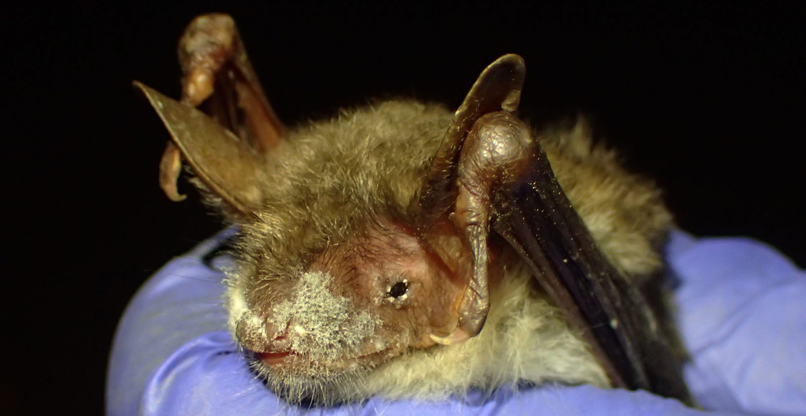
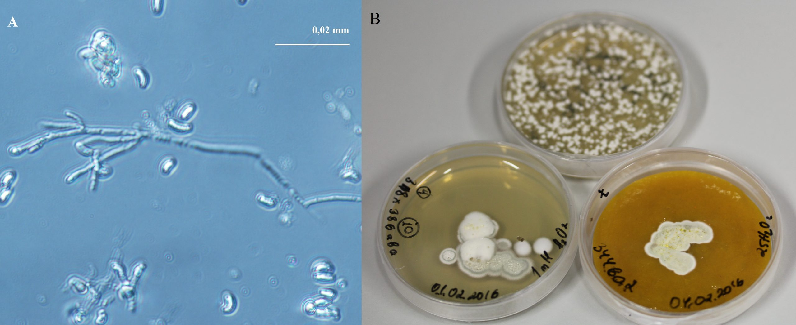
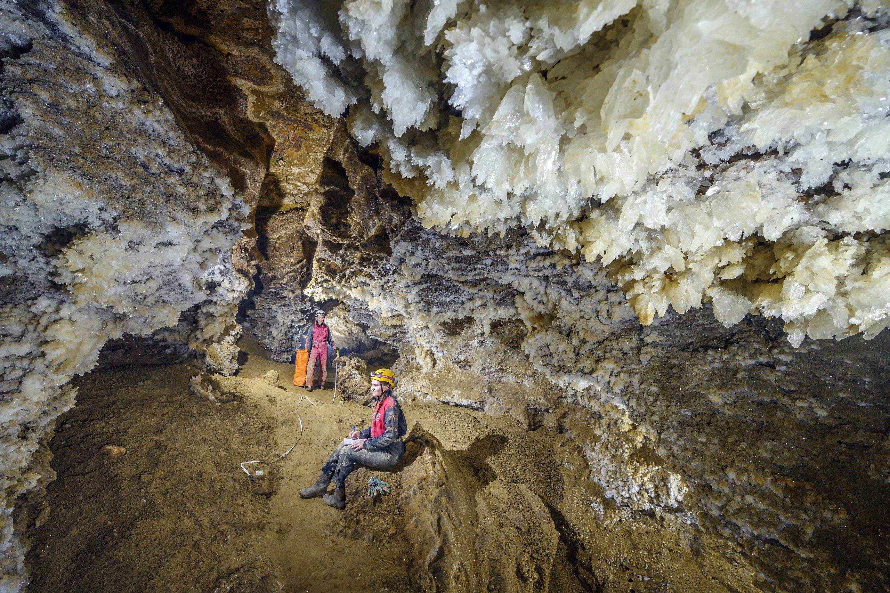
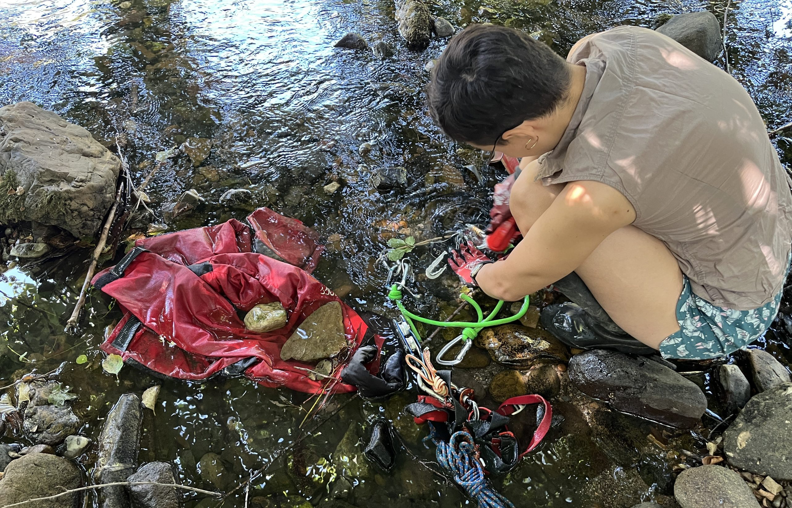
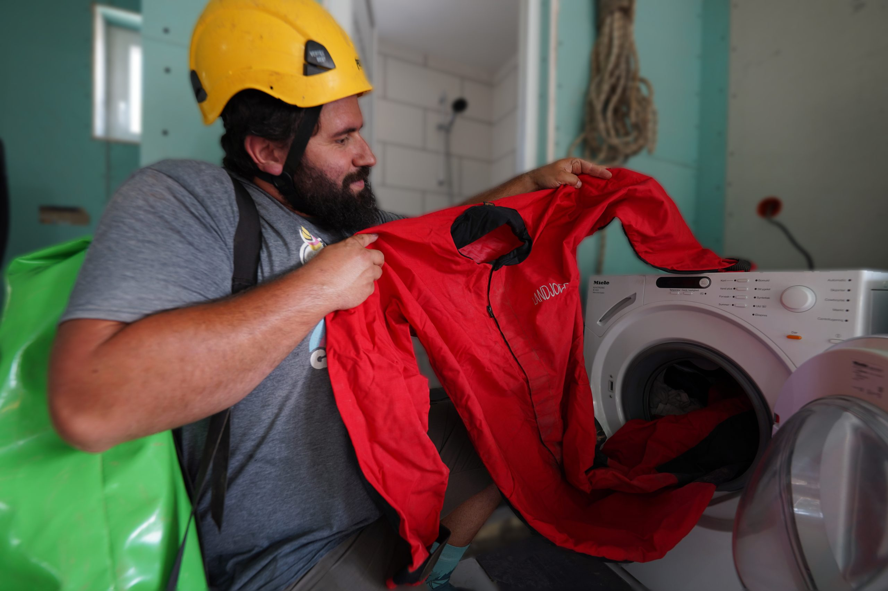
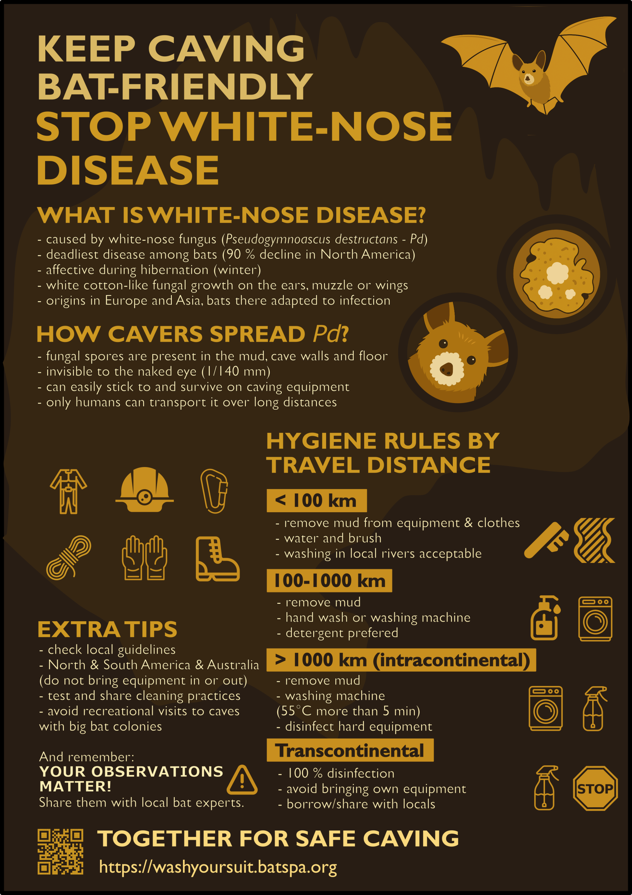

Prevent the spread of white-nose disease

What is white-nose disease?
White-nose disease (WND; associated with the White-nose syndrome/WNS) is the deadliest disease known in hibernating cave-dwelling bats, caused by the white-nose fungus. Up to now, it has taken several million victims, causing more than 90% declines in the colonies of the most affected bat species in North America. As bats provide an important natural control over insect pest populations, their reduced numbers seriously impact both wild and agricultural ecosystems and human health. Additionally, bats are umbrella species in cave ecosystems that support nutrient cycles and help maintain cave biodiversity and formations. Thus, protecting bats often means protecting caves and all their inhabitants.
How to recognise WND?
WND only affects bats during hibernation, when their body temperature is low, and cannot affect humans or other animals. It shows as a white, cotton-like fungal growth on the ears, muzzle, or wings of bats, usually in late hibernation/end of the winter (Figure 1). There are no known fungi outside of North America that look similar when observed with the naked eye; thus, visual observation of live bats is typically sufficient to diagnose WND. Usually, the more fungus you see, the more serious the infection is. However, do not confuse it with the growth of saprophytic (feeding on dead organic matter) fungi that cover the whole body of dead bats.

What causes WND?
WND is caused by the cave-dwelling and cold-loving fungus Pseudogymnoascus destructans, also called Pd or the white-nose fungus (Figure 2). It is actually a complex of two species but we just discovered the second one and we have not yet given it a separate scientific name. Instead, we use the names Pd1 and Pd2. Both Pd1 and Pd2 occur in Europe and Asia, however, they do not cause any mass mortality. This is because they have been present on these continents for thousands of years, giving bats evolutionary time to adapt to the infection. In contrast, Pd1 was introduced to North America only recently (approximately 20–30 years ago), where it encountered naïve bat species with no prior evolutionary exposure to the pathogen. This effect, where pathogens invade new regions where they did not occur before, is called “pathogen pollution” and is often mediated by humans.

Why is cavers’ behaviour important?
Pd spores, invisible to the naked eye (spores are 1/140th of a millimetre), are found in different cave substrates (e.g., in the mud on the cave floor, on walls) together with hundreds of other microbial species (fungi, bacteria, etc.). All of these can easily stick to caving equipment (on their own or stuck to mud), which was proved by our experiments where we isolated living Pd from caving suits after visiting caves. We also showed that Pd could survive on caving equipment for at least 25 days at room temperature. This means that cavers can unwillingly transport Pd1 or Pd2 from one cave to another. Our genetic data shows that this already happened with Pd1, which was carried unnoticed from the region of Podillia in Western Ukraine, where the longest gypsum caves in the world are located (Figure 3), to a cave in New York State in the US. In contrast, although some bat species can migrate great distances, a lot of research has shown they are not effective at carrying Pd far from their roosts.

What is the solution for WND prevention?
Fortunately, good expedition planning and hygiene can greatly reduce the spread of Pd. Here, we present specific hygiene instructions to follow in Europe or Asia, depending on travel distance.
Distances below 100 km or caving within the same region in the course of a single expedition – low conservation risk
At this distance, bats can carry Pd. Thus, simply removing the mud from caving suits and other equipment with water and a brush is enough as our goal is not necessarily to kill all Pd on our clothes but to limit its movement. Thus, cavers’ tradition of washing in local rivers is acceptable (Figure 4).

Distances between 100 and 1000 km or travelling between different caving regions within the same continent – moderate conservation risk
At this distance, people are already more effective Pd vectors than bats. Although both Pd1 and Pd2 species occur everywhere in Europe and big parts of Asia, mixing genetically different white-nose fungi can potentially create more dangerous pathogen variants. This has already happened with the chytrid fungus that kills amphibians around the world. Thus, we recommend washing your equipment extra carefully by hand or putting it in the washing machine after removing the mud, preferably using a detergent (Figure 5). Our experiments in the lab have shown that thorough brushing in water removes about 95% of Pd spores initially present on cordura pieces, and machine washing with detergent removes more than 99.5% of Pd spores. From nylon rope pieces, brushing with water removes about 85% of Pd, and machine washing with a specialised detergent, safe to use on equipment, can remove up to 98% of Pd. If you visit another caving club working in a different caving region, it is best to use their local equipment.

Distances above 1000 km within the same continent – high conservation risk
Here, the risks of genetic exchanges between different fungal strains are higher; thus, you should kill or remove all Pd from your equipment. The best practice would be to wash your caving suit at temperatures above 55°C for more than 5 minutes (proven to kill Pd) and disinfect hard equipment such as your camera with alcohol or other suitable agents, of course, after removing all mud. Leave all personal equipment, such as ropes, that cannot be safely disinfected and borrow local equipment instead. When leaving the place of the expedition, make sure that all dirty equipment is placed in clean bags so that it does not contaminate your clean equipment or your car. If your car gets dirty, you should wash it between expeditions as well – this will help prevent not only the spread of Pd but also the spread of other microbes that may live in the soil. For more detailed decontamination protocols and updated lists of disinfection agents tested against Pd, you can visit: https://www.whitenosesyndrome.org/static-page/decontamination-information.
Transcontinental distances – very high conservation risk
Bringing Pd1 or Pd2 to new places where they do not currently occur can start a second wave of WND-epidemics that cannot be stopped after. Thus, any equipment that you bring between continents should be 100% disinfected, and your shoes and other clothes should be clean. Do not bring anything that might contain even a trace of cave substrate.
Other continents
When caving in North America, you should follow their local guidelines available here: https://www.whitenosesyndrome.org/static-page/decontamination-information, which are based on Pd presence/absence rather than distance. Briefly, in a place where bats massively die of WND, every caving trip is considered high conservation risk, and caving equipment should always be disinfected between caves. Moving equipment from areas that are more contaminated with Pd to areas that are less contaminated is considered very high conservation risk and should be avoided. A regularly updated map of such areas can be found on the abovementioned website as well as a list of local disinfection agents tested against Pd. The best hygiene practice remains washing at temperatures above 55°C for more than 5 minutes. Some people, mainly researchers, also use single-use caving suits but these are rarely practical for exploratory caving. Do not bring caving equipment in and out of the continent.
In Australia or South America, Pd is not yet present. However, research shows that bat mortality due to WND is probable, as many caves offer conditions suitable for Pd and bat species are not adapted to the fungus. Thus, caving equipment should not be moved in and out of these continents. Within continents, you can follow the by-distance hygiene rules to prevent pathogen pollution with other microbial species. More information can be found here: https://wildlifehealthaustralia.com.au (for Australia).
How else can you help?
These hygiene instructions are based on the best of our current scientific knowledge, but there is always space for improvement. Feel free to share any ideas for cleaning caving equipment that can be both easy and safe for the environment. After a visit to a cave where Pd is particularly abundant or before a visit to a newly discovered cave or a cave that does not have a natural entrance or is particularly sensitive for other reasons, it might be prudent to go a hygiene category up. Do not forget to inform yourself about local legislation and cave access restrictions. For caves inhabited by big bat colonies, avoid recreational visits during their reproduction or hibernation.
Lastly, bat biologists are few, but cavers are many—and your observations are invaluable. You can get in touch with local bat experts or our team and report bat numbers and any signs of disease or unusual mortality. When reporting, include the cave name, exact location, date, number of live and dead bats, and photos. Note any unusual bat behaviour, visual WND, or recent human activity. Add your contact info for follow-up.

Acknowledgements
We thank all cavers who helped us with advice or filled and distributed our questionnaires about speleological hygiene practices.
Literature cited
- Cheng TL, Reichard JD, Coleman JTH, Weller TJ, Thogmartin WE, Reichert BE, Bennett AB, Broders HG, Campbell J, Etchison K, Feller DJ, Geboy R, Hemberger T, Herzog C, Hicks AC, Houghton S, Humber J, Kath JA, King RA, Loeb SC, Massé A, Morris KM, Niederriter H, Nordquist G, Perry RW, Reynolds RJ, Sasse DB, Scafini MR, Stark RC, Stihler CW, Thomas SC, Turner GG, Webb S, Westrich BJ, Frick WF (2021) The scope and severity of white-nose syndrome on hibernating bats in North America. Conservation Biology 35: 1586–1597. https://doi.org/10.1111/cobi.13739
- Fischer NM, Dumville I, Nabholz B, Zhelyazkova V, Stecker RM, Blomberg AS, Dool SE, Fritze M, Tilak MK, Bashta AT, Chenal C, Fiston-Lavier AS, Puechmaille SJ (2025) Two distinct host-specialized fungal species cause white-nose disease in bats. Nature. https://doi.org/10.1038/s41586-025-09060-5
- Fritze M, Puechmaille SJ, Fickel J, Czirják GA, Voigt CC (2021) A Rapid, in-Situ Minimally-Invasive Technique to Assess Infections with Pseudogymnoascus destructans in Bats. Acta Chiropterologica 23: 259–270. https://doi.org/10.3161/15081109ACC2021.23.1.022
- Gargas A, Trest MT, Christensen M, Volk TJ, Blehert DS (2009) Geomyces destructans sp. nov. associated with bat white-nose syndrome. Mycotaxon 108: 147–154. https://doi.org/10.5248/108.147
- Leopardi S, Blake D, Puechmaille SJ (2015) White-nose syndrome fungus introduced from Europe to North America. Current Biology 25: R217–R219. https://doi.org/10.1016/j.cub.2015.01.047
- Lorch JM, Meteyer CU, Behr MJ, Boyles JG, Cryan PM, Hicks AC, Ballmann AE, Coleman JTH, Redell DN, Reeder DM, Blehert DS (2011) Geomyces destructans causes white-nose syndrome. Nature 480: 376–378. https://doi.org/10.1038/nature10590
- Puechmaille SJ, Wibbelt G, Korn V, Fuller H, Forget F, Mühldorfer K, Kurth A, Bogdanowicz W, Borel C, Bosch T, Cherezy T, Drebet M, Görföl T, Haarsma AJ, Herhaus F, Hallart G, Hammer M, Jungmann C, Le Bris Y, Lutsar L, Masing M, Mulkens B, Passior K, Starrach M, Wojtaszewski A, Zöphel U, Teeling EC (2011) Pan-European distribution of white-nose syndrome fungus (Geomyces destructans) not associated with mass mortality. PLoS ONE 6. https://doi.org/10.1371/journal.pone.0019167
- Zhelyazkova V, Hubancheva A, Radoslavov G, Toshkova N, Puechmaille SJ (2020) Did you wash your caving suit? Cavers’ role in the potential spread of pseudogymnoascus destructans, the causative agent of white-nose disease. International Journal of Speleology 49: 145–155. https://doi.org/10.5038/1827-806X.49.2.2326
- Zhelyazkova V, Tičar J, Deleva S, Ivanov A, Toshkova N, Puechmaille S (2025) Cavers’ knowledge of biosecurity and its influence on the prevention of white-nose disease. Subterranean Biology 52: 45–68. https://doi.org/10.3897/subtbiol.52.140425
- Zukal J, Bandouchova H, Brichta J, Cmokova A, Jaron KS, Kolarik M, Kovacova V, Kubátová A, Nováková A, Orlov O, Pikula J, Presetnik P, Šuba J, Zahradníková Jr. A, Martínková N (2016) White-nose syndrome without borders: Pseudogymnoascus destructans infection tolerated in Europe and Palearctic Asia but not in North America. Scientific Reports 6: 19829. https://doi.org/10.1038/srep19829